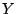
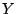
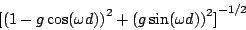

Next: Filters
Up: Time shifts and delays
Previous: Pitch shifter
Contents
Index
- A complex number has magnitude one and argument
 . What are
its real and imaginary parts?
. What are
its real and imaginary parts?
- A complex number has magnitude one and real part
 . What is its
imaginary part? (There are two possible values.)
. What is its
imaginary part? (There are two possible values.)
- What delay time would you give a comb filter so that its first frequency
response peak is at 440 Hertz? If the sample rate is 44100, what frequency
would correspond to the nearest integer delay?
- Suppose you made a variation on the non-recirculating comb filter so that
the delayed signal was subtracted from the original instead of adding. What
would the new frequency response be?
- If you want to make a 6-Hertz vibrato with a sinusoidally varying
delay line, and if you want the vibrato to change the frequency by 5%, how
big a delay variation would you need? How would this change if the same
depth of vibrato was desired at 12 Hertz?
- A complex sinusoid
![$X[n]$](img669.png) has frequency 11025 Hertz, amplitude
50 and initial phase 135 degrees. Another one,
has frequency 11025 Hertz, amplitude
50 and initial phase 135 degrees. Another one, ![$Y[n]$](img717.png) , has the same frequency,
but amplitude 20 and initial phase 45 degrees. What are the amplitude and
initial phase of the sum of
, has the same frequency,
but amplitude 20 and initial phase 45 degrees. What are the amplitude and
initial phase of the sum of  and ?
and ?
- What are the frequency, initial phase, and amplitude of the signal
obtained when (above) is delayed 4 samples?
- Show that the frequency response of
a recirculating comb filter with delay time
 and feedback gain
and feedback gain  , as a
function of angular frequency
, as a
function of angular frequency  , is equal to:
, is equal to:

Next: Filters
Up: Time shifts and delays
Previous: Pitch shifter
Contents
Index
Miller Puckette
2006-12-30